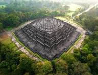
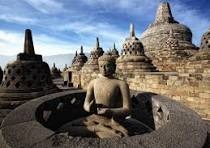
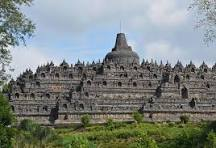

Candi Borobudur adalah sebuah candi Buddha yang terletak di Borobudur, Magelang, Jawa Tengah, Indonesia. Candi ini didirikan oleh para penganut agama Buddha Mahayana sekitar tahun 800-an Masehi pada masa pemerintahan wangsa Sailendra. Borobudur merupakan monumen Buddha terbesar di dunia sekaligus salah satu keajaiban dunia.
Arsitektur bangunan ini berbentuk punden berundak, dengan enam teras bujur sangkar dan tiga pelataran melingkar. Dindingnya dihiasi oleh ribuan panel relief dan ratusan arca Buddha yang menceritakan berbagai kisah spiritual serta sejarah peradaban masa lampau.


